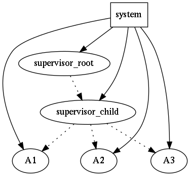
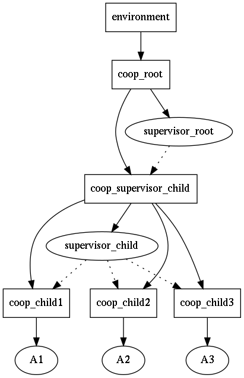
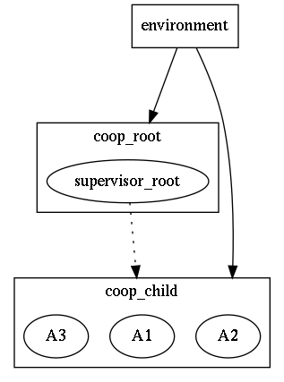
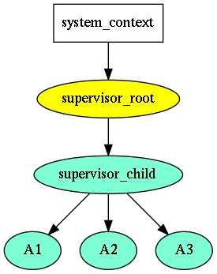
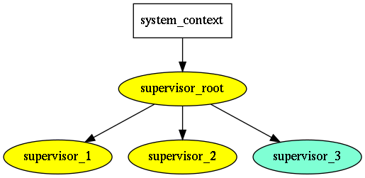

Trees of Supervisors in C++ (caf, sobjectizer, rotor)
The notion of supervisor & trees of supervisors
Erlang is famous for its erlang-supervisor approach, i.e. an actor which is responsible managing it's child actors lifetime (start, restart, shutdown).
In regular C++ code an error (exception) propagates towards the caller-side. In actor-based approach error is supervised by an actor owner (supervisor) and it's up to supervisor to decide how to react, e.g. restart actor but if it crashed no more than 3 times per minute. The caller-side is decoupled from this details at all.
In the case of child crash supervisor might decide either to restart it, or, if the local situation is considered too bad, then shutdown itself (and all it's children) and delegate the problem upwards, i.e. to is't own supervisor. The parent supervisor might, again, decide either restart or delegate the problem upwards again.
That form of delegating problem upto root supervisor naturally form tree of responsibilities, or, if you like, tree of supervision. This allows to an application slowly degrade and still be available (provide service) when non-fatal errors occur.
C++ supervising specifics
Erlang supervisors tolerate even programmer errors; this is known as let-it-crash principle, as a supervisor will just respawn crashed actor.
In C++ we cannot tolerate developer mistakes as in Erlang: there is no
reasonable reaction in general to leaked memory or std::abort() call, right?
Instead, in C++ world we assume that an actor is able to detect that it
is in invalid state, and just terminate, possibly notifying it's exit
reason upwards. In the upper layer the actor exit will be observed,
and a decision will be made how to handle with the situation.
Supervisor-like capabilities of caf & sobjectizer
caf (c++ actor framework)
There is no explicit supervisor role in caf. However, according to documentation caf-monitor, it is possible to subscribe to special system down message and provide appropriate reaction. This can be done in recursive manner, i.e. tree of responsibilities can be build.
However, if I read documentation correctly, any actor can monitor any other actor death. The responsibility of reaction is somewhat blurred from the API perspective. Let's name the approach supervising-via-monitoring.
As the actors are spawned (and owned) by system, the application at the
runtime does not creates an hierarchy, i.e. it is flat:

There is actors groupping capabilities in caf, which allows to multicast messages to all actors inside the group, e.g. shutdown messsage.
sobjectizer
In sobjectizer actors (agents, in the sobjectizer's terminology) are spawned
by cooperation; the cooperation itself is created by environment (the
similar role to system in caf). cooperations can create child cooperations,
thus making a hierarchy.
However, it should be noted, that cooperation in sobjectizer in not an actor;
it is the type provided by sobjectizer and there is no possibility to roll
your own implementation.
The cooperation in sobjectizer is some kind of supervisable group of actors,
as it requires that all actors to be started and successfully registered; if
any of them fails, coorepation will shutdown and unregister all (already registered)
actors.
Actors are managed by cooperations; how actors can get back the information
from cooperations? The notificator object should be created by cooperation
with the messages destination mbox; then the notificator object should be added
into the cooperation. Notificators are two kinds: reg and dereg, i.e. they
observe actors startup or shutdown events. Lastly, actor should subscribe
to the appropriate event on the message box. However,this is not an individual
actor shutdown event, it is whole cooperation shutdown event (registration
or deregistration).
Now follows my own vision how to get fine-gained supervising.
Thus, there is no direct actor shutdown observation; only indirect (i.e.
via cooperation death notification). If there is need to observe individual
actor shutdown, it should be the only actor on a cooperation, and the
cooperation should be monitored; in the case of actor crash, it the new
cooperation should be spawned, and the new actor should be spawned on it,
and the monitoring subscription routine above should be repeated.
This can be visualized as the following:

However, this looks a little bit overcomplicated. Indeed, sobjectizer
way of supervising is coarse-grained supervising: not individual actors
should be supervised, but group of related actors (cooperation).

For more details, please refer sobjectizer-underhood.
Supervising in Rotor
In rotor we'd like to achieve fine-gained Erlang-like supervising:

Please note the absence of dotted lines, as they coincide with the solid
lines, because the ownership of an actor is the same of supervising it.
An supervisor in rotor is also an actor. The supervising hierarchy is
naturally formed (unlike in caf), and still there are no doubling
of the hierarchy as in sobjectizer, where framework supplied managing
units (cooperations) are intermixed with user supplied actors.
However, parent-child relation between supervisors upto v0.02 version
was available only for boost-asio based supervisors... because each
supervisor incorporated own strand, which was generated by root
io_context. That way it was a mixture of execution controller
and supervising; so the real picture was like:

Nonetheless, it imposed the sequential execution context (strand) for every
supervisor, while it not necessary was needed. Also, the supervising hierarchy
was not available for other event-loops, because strand seems the boost-asio
unique feature.
To solve the situation, the locality notion was introduced. Under the hood,
it is plain const void* marker. By default, locality just a pointer to
root supervisor, if two supervisors has the same locality, they are executed
in the same (thread-safe) context. This makes it possible to have supervising
trees in all supported event loops in rotor.
How about boost-asio? locality here become a pointer to strand, making
it possible to introduce executing context (implies supervising) on demand,
i.e. something like this:

Here supervisor_root, supervisor_1, supervisor_2 are executed on
the context on one strand, while supervisor_2 has it's own strand.
This is available in rotor v0.03. (This led to API breaking changes,
as now boost::asio supervisor takes strand shared pointer in config).
Rotor v0.03 messaging internals
Messaging in rotor done without private actor's message boxes unlike
sobjectizer and caf. Every address (message delivery endpoint) is generated
by a supervisor a reference to the supervisor is embedded into the address.
So, during messages processing phase by each supervisor, it compared the reference
in message destination address with the self (this), and if the match occurs
the message was routed locally; otherwise the message was delivered for other
supervisor for further (local) routing.
Since rotor v0.03 address object also embeds locality (const void*). If
it matches to the locality of the supervisor, then the destination supervisor is
taken from the address and the message is immediately locally routed in the
context of the destination supervisor.
To make it possible, all supervisors with the same locality have to share the same queue of messages. The obvious way to achieve that is that child-supervisors with the same locality use root supervisor's messages queue.
In other words, a message is sent to locality, where all it's supervisors are peers entry points.